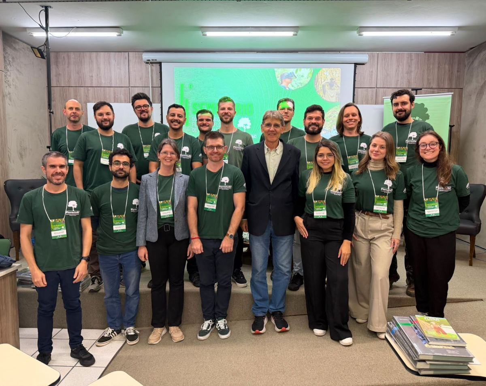
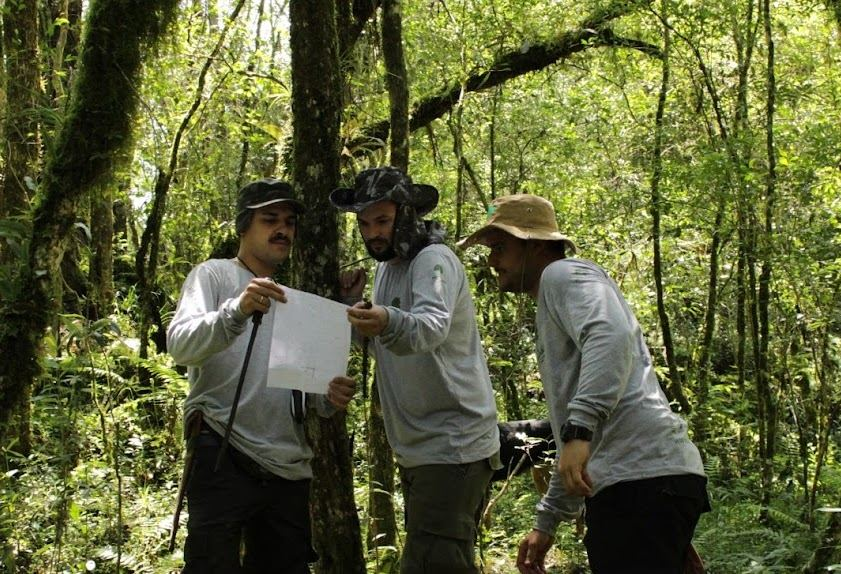

As florestas de Santa Catarina, medidas e monitoradas desde 2007
O FlorestaSC monitora a composição, a diversidade e o desenvolvimento das florestas catarinenses e gera informações para as políticas públicas de uso e conservação, a gestão territorial e o zoneamento econômico-ecológico.
O que você procura?
Busque em todo o site ou vá direto ao que precisa.
Três frentes de trabalho
Levantamento periódico em campo, monitoramento da cobertura florestal por sensoriamento remoto e divulgação científica com educação florestal.

Inventário florestal
Levantamento e monitoramento da diversidade de espécies de árvores e dos estoques de biomassa das florestas de Santa Catarina.
Saiba mais →
Mapeamento
Mapas da cobertura florestal e de outros usos da terra, feitos com geoprocessamento e sensoriamento remoto.
Saiba mais →
Educação florestal
Divulgação científica e educação ambiental para valorizar as florestas, especialmente com o público escolar.
Saiba mais →Notícias

4º Seminário do FlorestaSC divulga os resultados das últimas atividades de pesquisa

Aplicativos de realidade virtual do FlorestaSC: uma inovação para a educação florestal

FlorestaSC: a estratégia que revelou 2.871 espécies da flora catarinense
